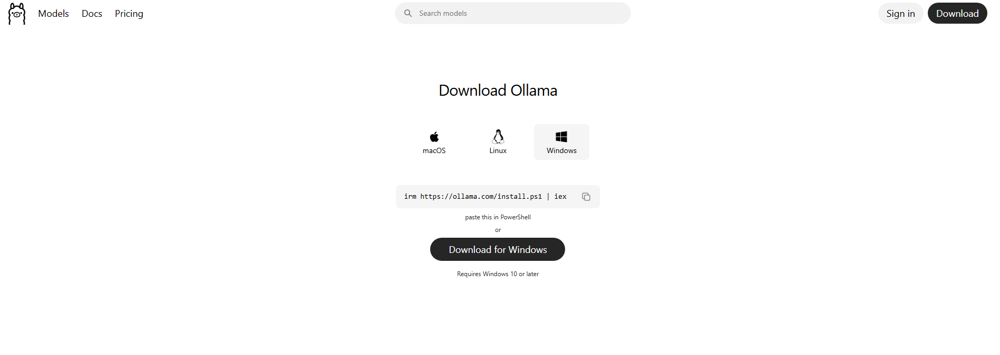
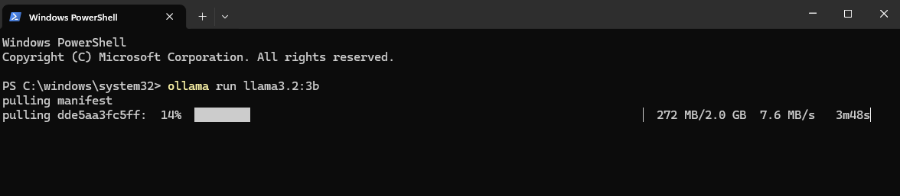
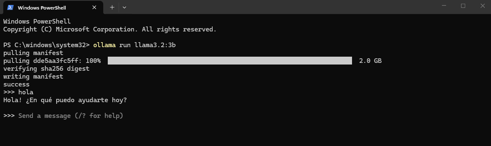

Instalación Paso a Paso
Sigue las fases en orden. En menos de 10 minutos tendrás una IA corriendo en tu computadora.
Entra al sitio oficial de Ollama, haz clic en Download y selecciona Windows. Se descargará un archivo .exe de instalación.
⬇ Descargar Ollama - ollama.com
Abre el archivo que descargaste y haz clic en "Instalar" o "Siguiente" hasta que el proceso termine. No necesitas configurar nada especial durante la instalación.
Ollama ya está activo. Lo sabrás porque verás el ícono de una llama pequeña en tu barra de tareas (abajo a la derecha en Windows, o arriba a la derecha en Mac). Eso significa que el motor está corriendo en segundo plano, listo para cuando lo necesites.
⚠ Nota sobre la interfaz incluida: Las versiones recientes de Ollama incluyen una interfaz web propia en ollama.com/chat. Puede abrirse automáticamente al instalar.
El problema es que te pide crear una cuenta en sus servidores, lo que significa que tus conversaciones pueden pasar por fuera de tu computadora y no son privadas. Esto es exactamente lo contrario de lo que buscamos. Puedes ignorarla o cerrarla. En las fases siguientes instalaremos Chatbox, una alternativa que funciona 100 % local y sin cuentas. También puedes ver todas las opciones en la sección Interfaces →
En Windows, busca PowerShell en el menú de inicio y ábrelo. Escribe el comando de abajo y presiona Enter. Ollama descargará el modelo automáticamente (solo tarda unos minutos) y lo abrirá directo para chatear.
PS> ollama run llama3.2:3b
pulling manifest...
pulling 5f60d5b6e7a5... 100% ▕████████████████▏ 2.0 GB
verifying sha256 digest
writing manifest
success
>>> _ # ¡Escribe aquí tu primera pregunta!
Cuando veas el símbolo >>> en pantalla, la IA está lista. Escribe "Hola" y presiona Enter para comprobar que te responde correctamente.

Dentro del chat, escribe el comando /bye y presiona Enter para salir y volver a la terminal normal.
# Escribe esto dentro del chat y presiona Enter para salir
>>> /byePara no depender siempre de la pantalla negra, instala Chatbox: una aplicación de escritorio que le pone una interfaz amigable a Ollama, igual a ChatGPT. Entra a la página y descarga la versión para tu sistema operativo.
⬇ Descargar Chatbox - chatboxai.appAbre la aplicación Chatbox y ve al menú de Configuración (el ícono de la tuerca). Sigue estos pasos:
En "Modelo" / "Proveedor de IA", abre la lista desplegable y selecciona Ollama.
En "API Host", verifica que diga http://127.0.0.1:11434 (suele venir automáticamente).
Haz clic en Guardar. Ya puedes usar la IA con un diseño de chat amigable y botones.
Crea una carpeta nueva en tu escritorio. Luego abre el Bloc de notas (Windows) o TextEdit (Mac) y escribe exactamente esto:
FROM llama3.2:3b
SYSTEM "Eres un pirata. Debes responder siempre de forma gruñona y usando palabras de pirata."Bloc de notas agrega .txt automáticamente, eso está bien, no lo elimines. Guarda el archivo como Modelfile.txt dentro de la carpeta que creaste. El nombre de la carpeta no importa, puedes llamarla como quieras.
Abre la terminal y navega hasta la carpeta donde guardaste el Modelfile (puedes arrastrar la carpeta a la ventana de la terminal para obtener la ruta). Luego ejecuta estos comandos:
# Crear el modelo con las instrucciones del Modelfile
PS> ollama create mipirata -f ./Modelfile.txt
transferring model data
creating new layer
writing manifest
success
# Abrir tu modelo personalizado y empezar a chatear
PS> ollama run mipirata
>>> _Estos comandos se usan fuera del chat, en PowerShell, para descargar, listar, encender o eliminar modelos:
# Ver todos los modelos que tienes descargados
PS> ollama list
# Descargar un modelo sin abrirlo todavía
PS> ollama pull mistral
# Ver qué modelos están corriendo ahora y cuánta memoria usan
PS> ollama ps
# Apagar un modelo para liberar memoria
PS> ollama stop llama3.2:3b
# Eliminar un modelo de tu disco (para liberar espacio)
PS> ollama rm mistral| Comando | ¿Qué hace? |
|---|---|
| ollama run <modelo> | Descarga (si no lo tienes) y abre el modelo para chatear. |
| ollama pull <modelo> | Solo descarga el modelo, sin abrirlo. |
| ollama list | Muestra todos los modelos descargados y su tamaño. |
| ollama rm <modelo> | Borra un modelo del disco para recuperar espacio. |
| ollama ps | Muestra qué modelos están activos y cuánta memoria usan. |
| ollama stop <modelo> | Apaga un modelo para liberar la memoria de tu PC. |
Una vez dentro del chat (cuando ves el símbolo >>>), puedes usar estos comandos especiales que controlan la IA sin salir de la conversación:
# Salir del chat y volver a la terminal
>>> /bye
# Ver todos los comandos disponibles
>>> /help
# Borrar la memoria de la conversación (empieza desde cero)
>>> /clear
# Guardar esta conversación como un modelo nuevo
>>> /save mi-jarvis
# Cambiar la personalidad de la IA sin cerrar el chat
>>> /set system Eres un experto en Python que solo responde con código
# Controlar qué tan "creativa" es la IA (0=exacto, 1=muy creativa)
>>> /set parameter temperature 0.1
# Ver información técnica del modelo activo
>>> /show info
# Ver la instrucción de personalidad activa
>>> /show systemSi en algún momento decides que ya no quieres Ollama en tu computadora, sigue estos pasos para eliminarlo por completo y recuperar el espacio en disco.
Cierra Chatbox. Luego ve a la barra de tareas en la esquina inferior derecha de tu pantalla (cerca del reloj), haz clic derecho sobre el ícono de la pequeña llama de Ollama y selecciona Quit (Salir).
Abre el menú de Inicio de Windows, escribe Aplicaciones instaladas y abre esa opción. Busca Ollama en la lista, haz clic en los tres puntos (···) y selecciona Desinstalar. Repite este mismo paso para buscar y desinstalar Chatbox AI.
Desinstalar Ollama no borra los modelos descargados. Para eliminarlos por completo y recuperar los gigabytes que ocupan, abre el Explorador de archivos de Windows. Haz clic en la barra de direcciones de la parte superior, escribe exactamente lo siguiente y presiona Enter:
%USERPROFILE%Busca una carpeta llamada .ollama y elimínala. Esto borrará por completo los modelos y dejará tu equipo como nuevo.
Ve a tu escritorio y borra la carpeta que creaste para guardar el archivo Modelfile.txt (la que usaste durante la Fase 04).